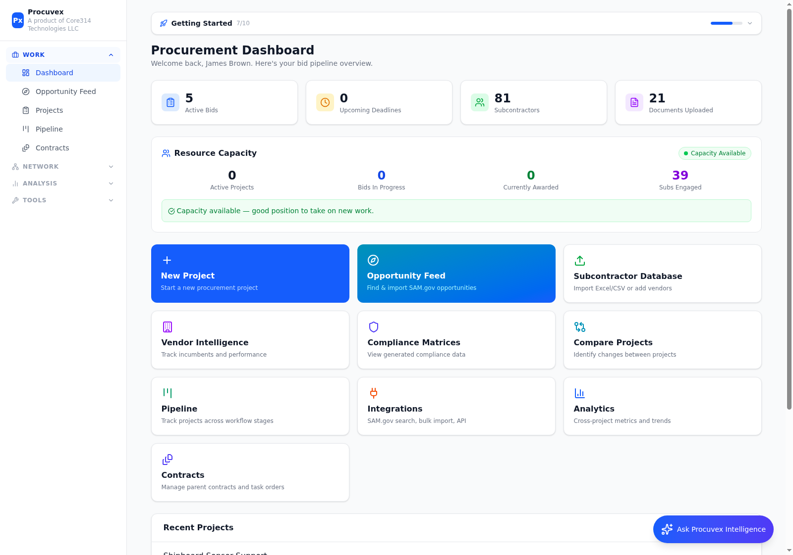
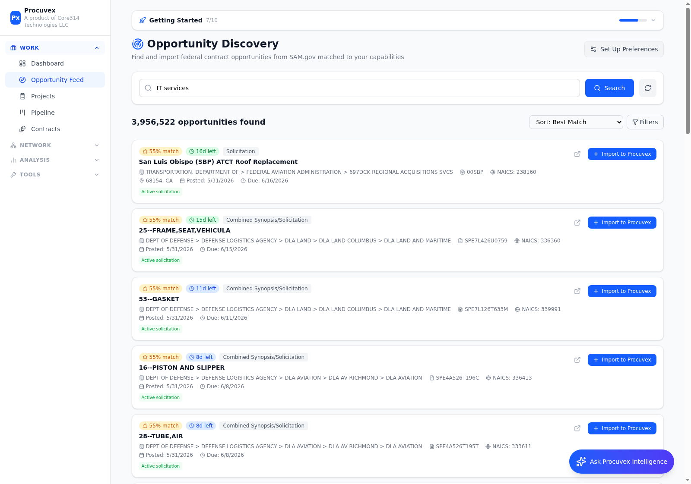
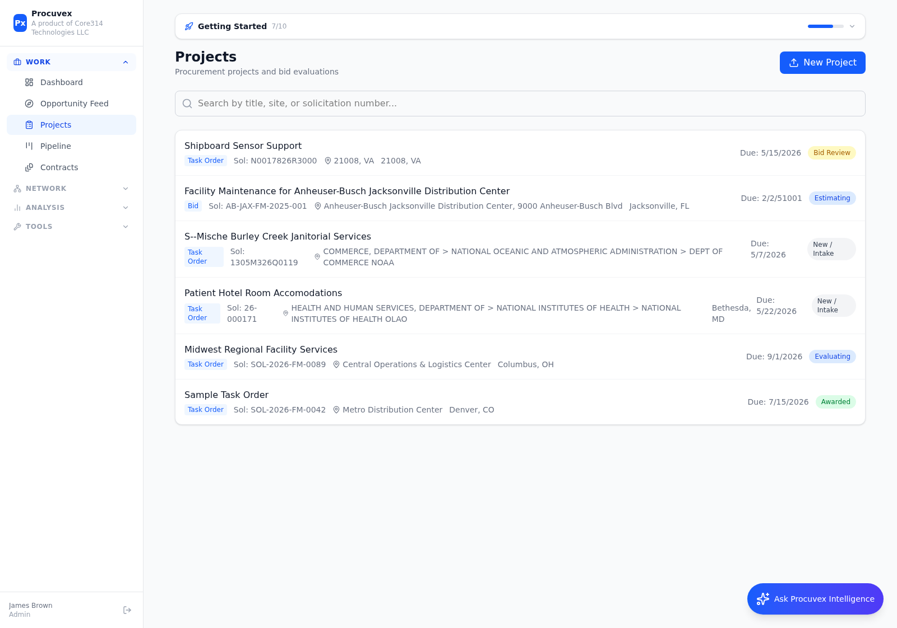
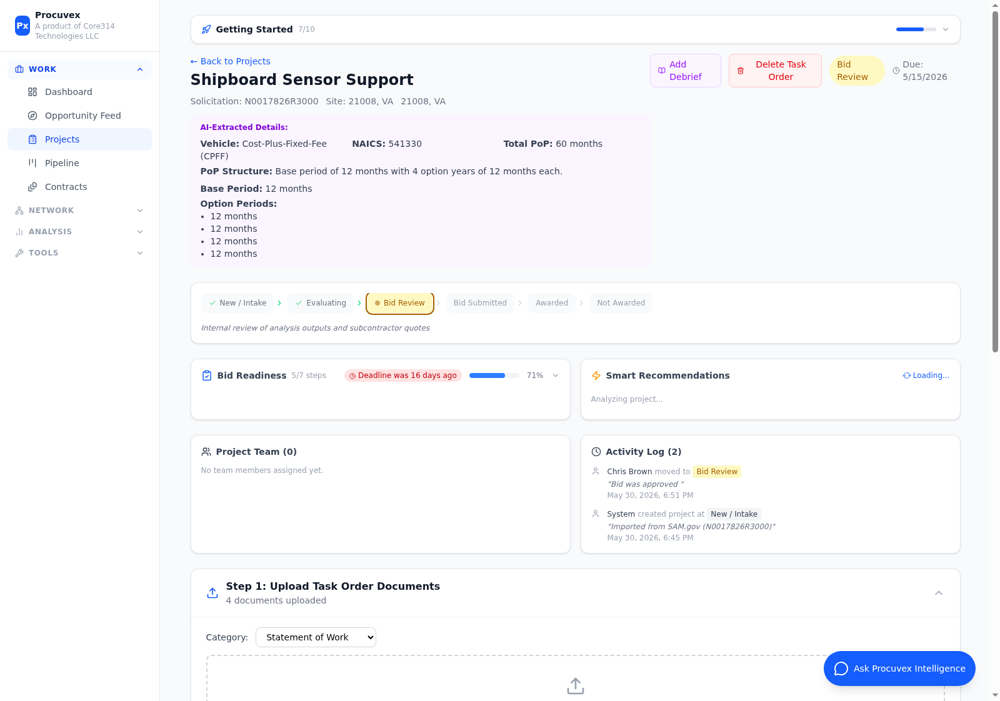
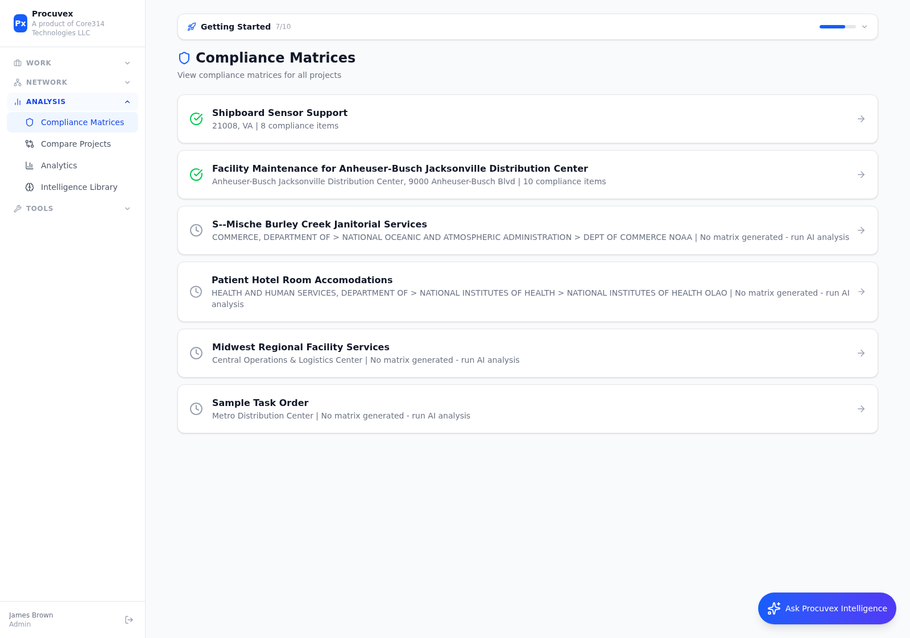
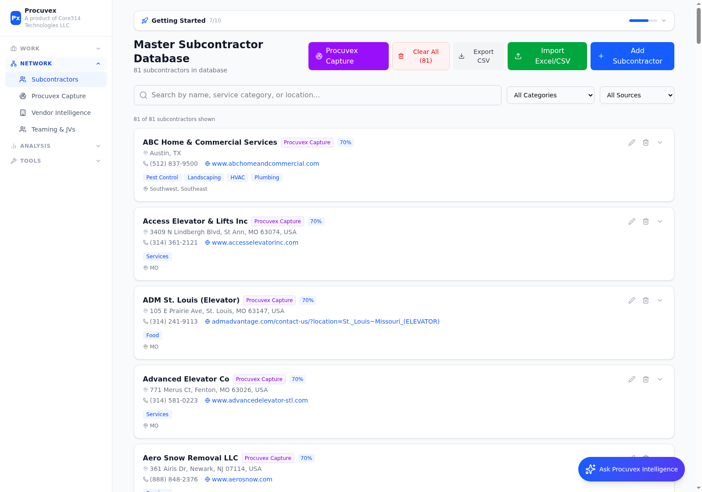
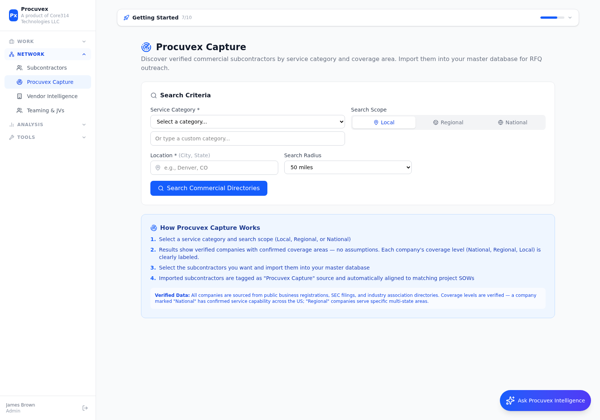
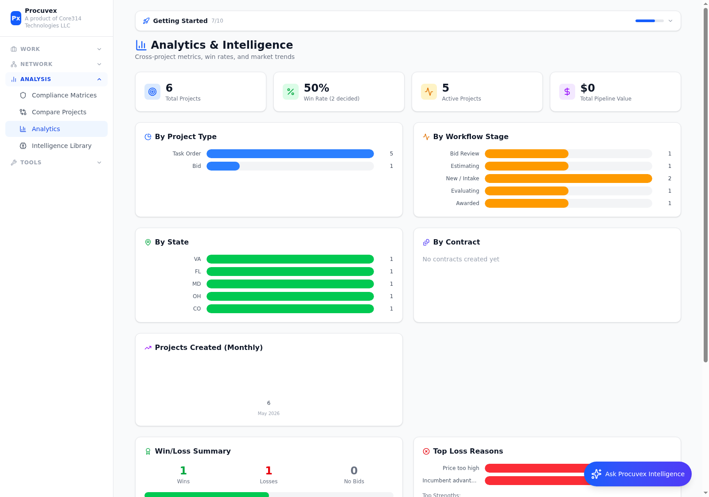
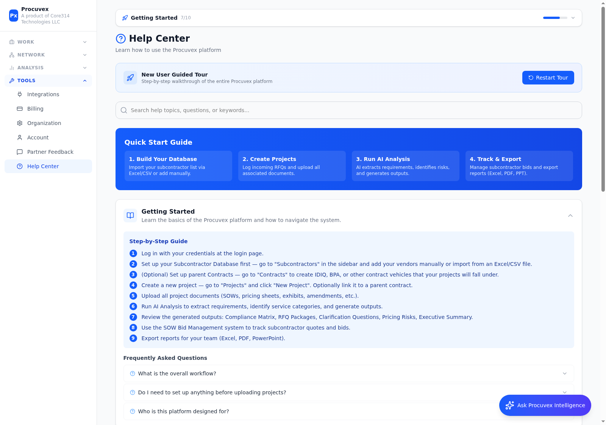
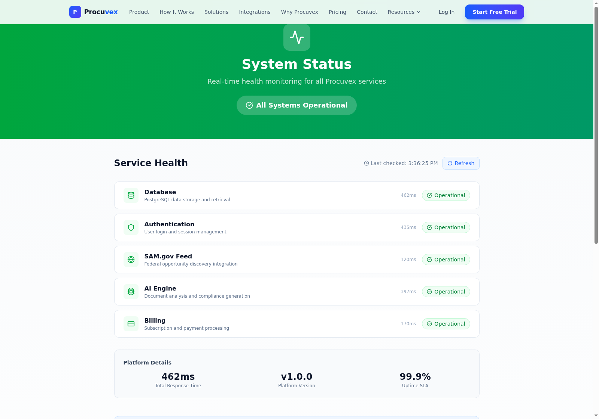

Pipeline & Workflow Management

Teams spend 60+ hours per bid on manual tasks that AI can handle in minutes.
Procuvex eliminates the manual work in government contracting — from finding opportunities on SAM.gov to generating compliance matrices, managing subcontractors, and tracking your entire pipeline.
Procuvex guides you through every step from discovery to award.
Find matching opportunities on SAM.gov with AI scoring
Import or create task orders and upload all documents
Extract requirements, identify risks, generate compliance matrix
Find subcontractors, send RFQs, manage bids
Track pipeline, submit bids, manage contracts
Procuvex Intelligence — AI chatbot available on every page to answer platform and project questions instantly.
Your at-a-glance view of active bids, deadlines, resource capacity, and quick actions.

Search millions of federal contract opportunities with AI-powered match scoring.

Centralize all your procurement projects with full lifecycle tracking.

Each project shows AI-extracted details, workflow stages, bid readiness, smart recommendations, uploaded documents, and full activity log.

AI reads your SOW/RFP documents and automatically generates compliance matrices.

Kanban-style pipeline view tracks every project from intake through award — filter by project type, drag cards between stages.
Build and manage your subcontractor database for teaming and RFQ distribution.

Discover verified commercial subcontractors from public registrations, SEC filings, and industry directories. Search by category, scope (Local/Regional/National), and radius.

Cross-project metrics, win rates, competitor landscape, and market trends.

The system gets smarter with every project, document, and decision you make.
Every bid outcome (won, lost, no-bid) is tracked with reasons and pricing data. Over time, the system identifies patterns in winning strategies, competitor behavior, and optimal pricing ranges for different agencies and contract types.
As you upload more SOWs and RFPs, the AI learns your industry's compliance patterns. It recognizes common requirement structures, identifies frequently missed items, and improves extraction accuracy with each document analyzed.
Opportunity match scores improve as you import projects and track outcomes. The system learns which NAICS codes, agencies, and contract sizes align with your actual capabilities and win history — not just keywords.
Track which subcontractors submit competitive quotes, respond quickly, and contribute to winning bids. The platform builds a performance profile for each vendor, helping you assemble stronger teaming arrangements.
Debrief data reveals your average pricing gap on losses (e.g., 10.8% above winning price) and savings on wins (e.g., 5.1% below government estimate). This data helps calibrate future bids for each contract type.
The AI generates contextual recommendations on each project page based on accumulated patterns — suggesting next steps, flagging risks, and recommending subcontractors based on past performance data.
Comprehensive help system with guided tours, step-by-step guides, and searchable FAQ.

Real-time health monitoring of all platform services. Database, Authentication, SAM.gov Feed, AI Engine, and Billing — all showing Operational with 99.9% uptime SLA.

From opportunity discovery to contract award, Procuvex handles the entire workflow so you can focus on winning.